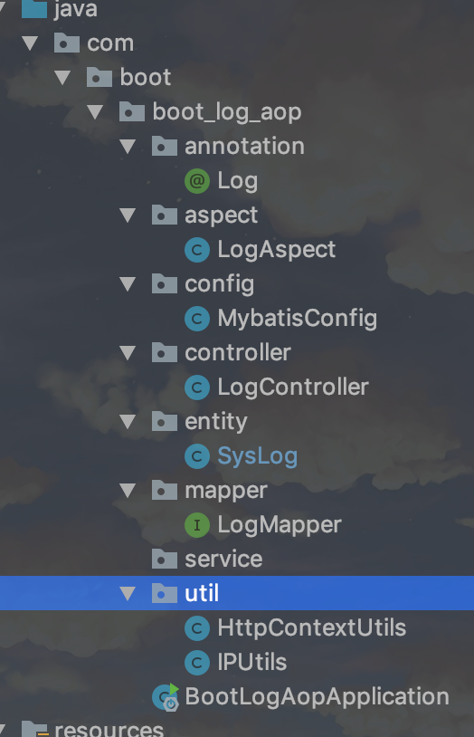

1.7.1. Spring Boot 2.x AOP记录用户操作日志
项目地址:https://github.com/heng1234/springboot2.x/tree/master/boot_log_aop
springboot使用AOP配合自定义注解可以方便的实现用户操作的监控
首先pom文件加入jar
<!-- druid数据源驱动 -->
<dependency>
<groupId>com.alibaba</groupId>
<artifactId>druid-spring-boot-starter</artifactId>
<version>1.1.10</version>
</dependency>
<!--lombok插件-->
<dependency>
<groupId>org.projectlombok</groupId>
<artifactId>lombok</artifactId>
<version>1.18.10</version>
<optional>true</optional>
</dependency>
<!--mybatis-->
<dependency>
<groupId>org.mybatis.spring.boot</groupId>
<artifactId>mybatis-spring-boot-starter</artifactId>
<version>1.3.1</version>
</dependency>
<dependency>
<groupId>org.springframework.boot</groupId>
<artifactId>spring-boot-starter-web</artifactId>
</dependency>
<!-- aop依赖 -->
<dependency>
<groupId>org.springframework.boot</groupId>
<artifactId>spring-boot-starter-aop</artifactId>
<version>2.1.7.RELEASE</version>
</dependency>
<!--oracle-->
<dependency>
<groupId>com.oracle</groupId>
<artifactId>ojdbc6</artifactId>
<version>11.2.0.4</version>
</dependency>
创建数据库表这里使用的是oracle11g
CREATE TABLE "SYS_LOG" (
"ID" NUMBER(20) NOT NULL ,
"USERNAME" VARCHAR2(50 BYTE) NULL ,
"OPERATION" VARCHAR2(50 BYTE) NULL ,
"TIME" NUMBER(11) NULL ,
"METHOD" VARCHAR2(200 BYTE) NULL ,
"PARAMS" VARCHAR2(500 BYTE) NULL ,
"IP" VARCHAR2(64 BYTE) NULL ,
"CREATE_TIME" DATE NULL
);
COMMENT ON COLUMN "SYS_LOG"."USERNAME" IS '用户名';
COMMENT ON COLUMN "SYS_LOG"."OPERATION" IS '用户操作';
COMMENT ON COLUMN "SYS_LOG"."TIME" IS '响应时间';
COMMENT ON COLUMN "SYS_LOG"."METHOD" IS '请求方法';
COMMENT ON COLUMN "SYS_LOG"."PARAMS" IS '请求参数';
COMMENT ON COLUMN "SYS_LOG"."IP" IS 'IP地址';
COMMENT ON COLUMN "SYS_LOG"."CREATE_TIME" IS '创建时间';
CREATE SEQUENCE seq_sys_log START WITH 1 INCREMENT BY 1;
对应的实体类
import lombok.Data;
import java.io.Serializable;
import java.util.Date;
@Data
public class SysLog implements Serializable{
private static final long serialVersionUID = -6309732882044872298L;
/**
* id
*/
private Integer id;
/**
* 用户名
*/
private String username;
/**
* 用户操作
*/
private String operation;
/**
* 响应时间
*/
private Integer time;
/**
* 请求方法
*/
private String method;
/**
* 请求参数
*/
private String params;
/**
* Ip地址
*/
private String ip;
/**
* 创建时间
*/
private Date createTime;
}
定义注解@Log注解
package com.boot.boot_log_aop.annotation;
import java.lang.annotation.ElementType;
import java.lang.annotation.Retention;
import java.lang.annotation.RetentionPolicy;
import java.lang.annotation.Target;
@Retention(value = RetentionPolicy.RUNTIME)
@Target(value = ElementType.METHOD)
public @interface Log {
String value() default "";
}
mapper
import com.boot.boot_log_aop.entity.SysLog;
/**
* @author : kaifa
* create at: 2019-10-22 17:30
* @description: log mapper接口
*/
public interface LogMapper {
/**
* 切面保存日志
* @param sysLog
* @return
*/
public int saveLog(SysLog sysLog);
}
Mapper.xml
<?xml version="1.0" encoding="UTF-8" ?>
<!DOCTYPE mapper PUBLIC "-//mybatis.org//DTD Mapper 3.0//EN"
"http://mybatis.org/dtd/mybatis-3-mapper.dtd">
<mapper namespace="com.boot.boot_log_aop.mapper.LogMapper">
<insert id="saveLog" parameterType="com.boot.boot_log_aop.entity.SysLog">
INSERT INTO SYS_LOG(ID,USERNAME,OPERATION,TIME,METHOD,PARAMS,IP,CREATE_TIME) VALUES
(seq_sys_log.nextval, #{username}, #{operation}, #{time}, #{method}, #{params}, #{ip}, #{createTime})
</insert>
</mapper>
定义一个LogAspect类，使用@Aspect标注让其成为一个切面，切点为使用@Log注解标注的方法，使用@Around环绕通知
/**
* @author : kaifa
* create at: 2019-10-22 17:19
* @description: log 切面
*/
@Component
@Aspect
public class LogAspect {
@Autowired
private LogMapper logMapper;
@Pointcut("@annotation(com.boot.boot_log_aop.annotation.Log)")
public void pointcut(){
}
/**
* 要有返回值,不然执行的方法返回为空
* @param point
* @return
*/
@Around("pointcut()")
public Object around(ProceedingJoinPoint point){
Object obj = null;
// Object[] args = point.getArgs();
long beginTime = System.currentTimeMillis();
try {
// 执行方法
obj = point.proceed();
} catch (Throwable e) {
e.printStackTrace();
}
// 执行时长(毫秒)
long time = System.currentTimeMillis() - beginTime;
// 保存日志
saveLog(point, time);
return obj;
}
private void saveLog(ProceedingJoinPoint joinPoint, long time) {
MethodSignature signature = (MethodSignature) joinPoint.getSignature();
Method method = signature.getMethod();
SysLog sysLog = new SysLog();
Log logAnnotation = method.getAnnotation(Log.class);
if (logAnnotation != null) {
// 注解上的描述
sysLog.setOperation(logAnnotation.value());
}
// 请求的方法名
String className = joinPoint.getTarget().getClass().getName();
String methodName = signature.getName();
sysLog.setMethod(className + "." + methodName + "()");
// 请求的方法参数值
Object[] args = joinPoint.getArgs();
// 请求的方法参数名称
LocalVariableTableParameterNameDiscoverer u = new LocalVariableTableParameterNameDiscoverer();
String[] paramNames = u.getParameterNames(method);
if (args != null && paramNames != null) {
String params = "";
for (int i = 0; i < args.length; i++) {
params += " " + paramNames[i] + ": " + args[i];
}
sysLog.setParams(params);
}
// 获取request
HttpServletRequest request = HttpContextUtils.getHttpServletRequest();
// 设置IP地址
sysLog.setIp(IPUtils.getIpAddr(request));
// 模拟一个用户名
sysLog.setUsername("hlvy");
sysLog.setTime((int) time);
Date date = new Date();
sysLog.setCreateTime(date);
// 保存系统日志
logMapper.saveLog(sysLog);
}
}
测试
import javax.servlet.http.HttpServletRequest;
/**
* @author : kaifa
* create at: 2019-10-22 17:33
* @description: 测试日志切面controller
*/
@RestController
@RequestMapping("log")
public class LogController {
@RequestMapping("findlog")
@Log("hello log")
public String log1(HttpServletRequest request){
return "hello log";
}
@Log("测试log")
@RequestMapping("findlogId")
public String log2(HttpServletRequest request,String name){
return "hello "+name;
}
}
项目结构:

启动项目，分别访问
http://localhost:7004/log/findlog
http://localhost:7004/log/findlogId?name=111
查询数据库